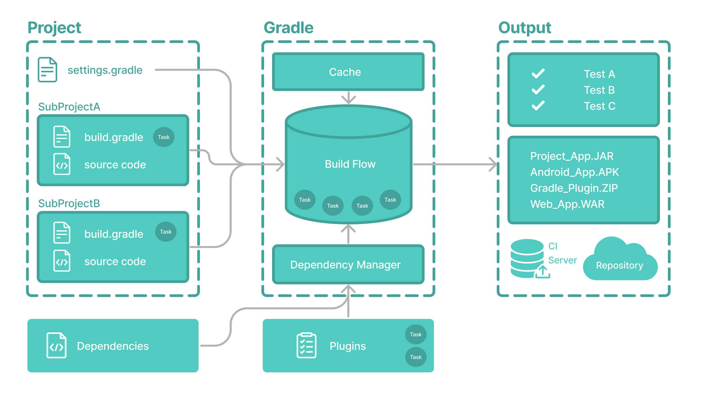

Basic Gradle

Gradle core concepts
Projects（项目）
Gradle Projects（项目）是一个可以构建的软件，比如一个应用程序或一个库，通常分为两种：
- Single project：单体工程包含一个 project，称为 root project；
- Multi-project：包含一个 root project 和多个 subproject；
Build Scripts （构建脚本）
Build scripts 描述了Gradle 该如何一步步构建当前 Project。
每个 project 都能包含一个或多个 build script。
Dependency Management（依赖管理）
一项用于声明和解析当前 project 依赖的外部资源的自动化技术。
Tasks（任务）
Task 是工作的基本单元，如编译代码或运行测试。
每个 project 都包含一个或多个定义在 build script 中或 plugin 中的 task。
Plugins（插件）
Plugin 是可用于扩展 Gradle 的能力，和向 project 中添加 task。
Gradle project structure
一个使用了 Gradle 的 project 的一个清晰的标识是其根目录包含 gradlew and gradle.bat。可能看起来像这样：
project
├── gradle
│ ├── libs.versions.toml
│ └── wrapper
│ ├── gradle-wrapper.jar
│ └── gradle-wrapper.properties
├── gradlew
├── gradlew.bat
├── settings.gradle(.kts)
├── subproject-a
│ ├── build.gradle(.kts)
│ └── src
└── subproject-b
├── build.gradle(.kts)
└── src
gradle：放置 wrapper 文件或一些其他配置；gradlew & gradle.bat：wrapper 脚本；settings.gradle：定义了根项目 root project 名称和 子项目 subprojects；subproject-a/bbuild.gradle：子项目的 build scripts 构建脚本；
Invoking Gradle
大多数 IDE 都内置了 Gradle 的调用方法，安装了 Gradle 后可通过命令行运行：
$ gradle build但是大多数项目都不会使用安装的 Gradle。
Gradle Wrapper
Wrapper 是一个的脚本，可调用 Gradle 声明版本，这是执行Gradle构建的推荐方式：
$ gradlew build # Linux or OSX
$ gradle.bat build # WindowsGradle Wrapper Basics
使用 Wrapper 有如下优点：
- 在给定的 gradle 版本上标准化 project；
- 为不同用户，提供相同版本的 Gradle；
- 为 Gradle 提供不同的运行环境；
Using the Gradle Wrapper
$ ./gradlew build
$ .\gradlew.bat build该命令在 Wrapper 所在的同一目录中运行，否则需要基于 Wrapper 的相对路径。
Command-Line Interface Basics
$ gradle [taskName...] [--option-name...]
$ gradle [taskName1 taskName2...] [--option-name...]
$ gradle :taskName
$ gradle taskName --exampleOption=exampleValueSettings File Basics
设置文件是 Gradle 项目的入口点，其主要目的是添加需要构建的子项目：
- 对于单项目，设置文件是可选的；
- 对于多项目的构建，设置文件是强制的，它声明了所有的子项目；
Settings script
如其名，它是一个脚本文件，要么使用 Groovy 编写的settings.gradle 要么是 Kotlin 的 settings.gradle.kts，不出意外都位于项目根目录。
// settings.gradle
// Define the project name
rootProject.name = 'root-project'
// Add subprojects.
include('sub-project-a')
include('sub-project-b')
include('sub-project-c')// settings.gradle.kts
rootProject.name = "root-project"
include("sub-project-a")
include("sub-project-b")
include("sub-project-c")settings script 执行后会根据配置生成一个 Settings 对象，该对象有许多属性，例如上述的
rootProject则是其一。上述的 name 的配置完整如下：settings.rootProject.name = "root"
Standard Settings properties
| Name | Description |
|---|---|
buildCache | 构建的缓存配置 |
plugins | The container of plugins that have been applied to the settings. |
rootDir | The root directory of the build. The root directory is the project directory of the root project. |
rootProject | The root project of the build. |
settings | Returns this settings object. |
以下是常用的函数：
| Name | Description |
|---|---|
include() | 添加给定的项目到构建中 |
includeBuild() | Includes a build at the specified path to the composite build. |
Settings Script structure
Settings script 是一组使用{ … } 调用 Gradle API 的函数，一个{ … }块在 Kotlin 中称为 lambda ，在 Groovy 中叫 closure 。
函数中在执行时，依靠着 this 对象，在 Kotlin lambda 中称为 receiver，在 Groovy closure 中称 delegate。Gradle 确定正确的 this 对象并调用正确的相应方法。
如下，id("plugin")对象函数调用的 this 类型为 PluginDependenciesSpec.
plugins(function() {
id("plugin")
})Gradle 一行一行从上往下执行脚本，来看一个详细例子：
pluginManagement {
repositories {
gradlePluginPortal()
google()
}
}
plugins {
id("org.gradle.toolchains.fake") version "0.6.0"
}
rootProject.name = "root-project"
dependencyResolutionManagement {
repositories {
mavenCentral()
}
}
include("sub-project-a")
include("sub-project-b")
include("sub-project-c")pluginManagement 可为项目定义插件，引入像 Gradle Plugin Portal 如此的二进制仓库或使用 includeBuild 通过路径引入其他的 Gradle 构建插件。
plugins 声明将使用的插件，其配置能在多个构建/子项目中共享。插件只影响生成的 Settings 对象。
dependencyResolutionManagement 为项目的组件依赖，提供了一个集中的本地声明仓库，可使用repositories 声明二进制仓库如 Maven Central 。
include 语句定义了添加到项目的子项目。脚本中的每一项本质上都是调用了 Settings 对象的方法：
include("app")
settings.include("app")
include ':app'和include "app"的区别添加了
:表示该子模块在根目录下，否则只是表示其为当前项目的子模块。
Build File Basics
每个 build file 都至少包含一个 build script，其中能添加两种类型的依赖：
- Gradle 和 build script 依赖的库和/或插件；
- 项目资源（源代码）依赖的库；
Build scripts
Build script 是 Groovy 写的 build.gradle 或是 Kotlin 写的 build.gradle.kts。
// build.gradle
plugins {
id 'application'
}
application {
mainClass = 'com.example.Main'
}// build.gradle.kts
plugins {
id("application")
}
application {
mainClass = "com.example.Main"
}plugins：添加插件，插件能扩展 Gradle 的功能，并添加任务到项目中。如application插件，可方便创建一个 可执行的 JVM 程序，此插件还隐式地引入了 Java 插件（包含了编译测试打包等功能）。application：添加一些约定属性，插件的引入也会添加属性和函数到项目中。如application插件定义了程序的打包和分发方式，即run任务，即需要定义 Java 程序的主类。
Dependency Management Basics
依赖管理，是一项用于声明和解析项目所需的外部资源的自动给化技术。
Build scripts 定义了构建可能需要外部依赖项目的步骤，外部依赖涉及到 jars，插件，库或者源代码，以支持构建项目。
Version Catalog
版本目录提供了一种在 libs.versions.toml文件中集中控制依赖声明的方式。
该目录简化了在多个子项目中依赖共享和版本配置，也允许团队在大项目中强制库和插件的版本。
通常在 catalog 包含以下几个节点：
- [versions] 声明引入的依赖和插件的版本号；
- [libraries] 定义在 build files 中的库；
- [bundles] 定义一组依赖；
- [plugins] 定义插件；
[versions]
androidGradlePlugin = "7.4.1"
mockito = "2.16.0"
[libraries]
google-material = { group = "com.google.android.material", name = "material", version = "1.1.0-alpha05" }
mockito-core = { module = "org.mockito:mockito-core", version.ref = "mockito" }
[plugins]
android-application = { id = "com.android.application", version.ref = "androidGradlePlugin" }该文件为于 gradle 路径下，可被 IDE 和 Gradle 自动使用，也应该加入到版本管理中。
Declaring Your Dependencies
下面的 build.gradle.kts 文件使用上述的版本目录添加了插件和依赖：
plugins {
alias(libs.plugins.android.application)
}
dependencies {
// Dependency on a remote binary to compile and run the code
implementation(libs.google.material)
// Dependency on a remote binary to compile and run the test code
testImplementation(libs.mockito.core)
}com.android.application：该插件添加了多个用于构建 Android apps 的功能；com.google.android.material：该库提供在 Android apps 中创建 UI 的组件，该库将在项目被用于编译和运行源代码；org.mockito:mockito-core：该库是一个用于测试 java 代码 mock 框架，该依赖用于编译和测试源代码。
Viewing Project Dependencies
在命令行中使用./gradlew :app:dependencies可查看依赖。
Task Basics
使用命令行调用 Gradle Wrapper 运行 build 任务：
$ ./gradlew buildAvailable tasks
所有的可用的任务来源于 Gradle 插件和 build scripts，使用 tasks 任务能够列出所有的任务：
$ ./gradlew tasksRunning tasks
如何运行任务，使用 ./gradlew / ./gradlew.bat 加上任务名。
Task dependency
大多情况下，某个任务需要其他任务先行运行。
例如，对于 Gradle 执行 build 任务时，java 代码首先必须编译。因此，build 任务依赖于 compileJava 任务，意味着 compileJava 任务在 build 任务之前被执行。
Build scripts 能选择性定义任务依赖，Gradle 会自动确定任务执行次序。
Plugin Basics
大多数的功能，像编译 java 代码的能力，都来源于插件。
使用插件是主要的组织构建逻辑的机制，插件能提供像运行代码，创建文档，设置源文件，发布归档等这样的有用的任务，例如：
- SpringBoot 的
org.springframework.boot插件； - Google Services 的
com.google.gms:google-services，提供 Google API 和 Firebase 服务。
Plugin distribution
插件的分发主要有以下三种方式：
- Core plugins - Gradle 开发和维护的一组核心插件；
- Community plugins - Gradle 社区通过 Gradle Plugin Portal 共享的插件；
- Local plugins - Gradle 运行用户使用 APIs 创建自定义插件；
使用一个全局唯一的标识和或一个名字构成的 plugin id，在 build scripts 引入插件：
plugins {
id «plugin id» version «plugin version» [apply «false»]
}Core plugins
核心插件都是独一无二的短小名字，如 java 即为 JavaPlugin：
plugins {
id("java")
}Community plugins
To apply the org.springframework.boot plugin to a project:
plugins {
id("org.springframework.boot") version "3.1.5"
}Plugin tasks
Jib 是一个构建 java 程序的 docker 和 OCI 镜像的插件：
plugins {
id("com.google.cloud.tools.jib") version "3.4.0"
}引入该插件后，将 jib，jibBuildTar 和 jibDockerBuild 三个任务添加到当前项目。
Gradle Incremental Builds and Build Caching
Gradle 使用两个主要的功能来减少构建时间：增量构建和构建缓存。
Incremental builds
增量构建是指避免运行那些输入在上一次构建前没有改变的任务，如果这些任务再次运行产生通用的输出，那么再次执行是没有必要的。
对于增量构建的工作，任务必须定义输入和输出。Gradle 将在构建时确定输入和输出是否改变。如果有改动，Gradle 将执行；反之，则跳过执行。
增量构建是默认开启的，在操作中查看的方式是开启 verbose 模式，在该模式下，构件中每一个任务状态都会被标记。
$ ./gradlew compileJava --console=verbose当执行之前执行过且未改变的任务时，UP-TO-DATE 则会打印在该任务后。
如果想每次都开启 verbose mode，可在
gradle.properties文件中设置org.gradle.console=verbose。
Build caching
如果一个开发者切换到上周创建的一个分支，将会发什么呢？文件将被重新构建，即使开发者正在构建以前就被构建过的东西。
这就是 build caching 有用的地方了。
构建缓存存储上一次构建结果，并将其在需要的时候恢复。它能防止冗余的工作，执行时间的消耗和费力的处理。
当构建缓存被用来重新填充本地目录时，任务被标记为FROM-CACHE。
Build Scans
Build scan 是运行构建时捕获的元数据的表示形式。
Gradle 捕获构建元数据，并将其发送到 Build Scan Service，该服务将其转换为分析和共享的信息。
当出现故障，协作，或优化构建性能时，扫描收集到的信息则是宝贵的资源。
例如，有了构建扫描，在 Stack Overflow 等社区询问时，没必要每一次复制粘贴报错信息或关于环境细节等。相反，只需要复制最近一次构建的链接。
Enable Build Scans
开始构建扫描，只需要一个命令行参数：
$ ./gradlew build --scans